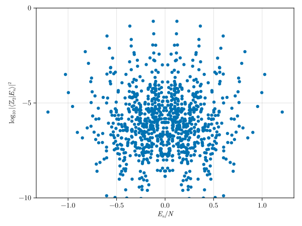

Quantum many-body scars in the PXP chain
The PXP model describes a chain of Rydberg atoms subject to a nearest-neighbor blockade constraint: two adjacent atoms cannot both be in the excited (Rydberg) state $|r\rangle$ simultaneously. The Hamiltonian acts on the constrained Hilbert space and flips the state of each atom conditioned on both of its neighbors being in the ground state $\ket{g}$:
\[H = \sum_{i} P_{i-1} X_i P_{i+1}\,,\]
where $P_i = \ket{g}\!\!\bra{g}_i$ is the projector onto the ground state and $X_i = \ket{g}\!\!\bra{r}_i + \ket{r}\!\!\bra{g}_i$.
This model is known to exhibit quantum many-body scars[Turner_2018]: special high-energy eigenstates that have anomalously large overlap with the $\mathbb{Z}_2$ period-2 density-wave initial state $\ket{r g r g \cdots}$, leading to persistent oscillations when the system is initialized in that state.
Defining the Rydberg DoF-object and blockade constraint
We first define the Rydberg degree-of-freedom object and a custom symmetry group encoding the blockade constraint. The blockade is represented as a SymGroup with a check function that returns false whenever two adjacent sites are both in state $\ket{r}$.
using SymBasis
N = 22 # number of sites in the chain
# define the Rydberg DoF-object with two states: ground (g) and Rydberg (r)
dofo = DoFObject(:Rydberg, (:g, :r))
# define the check function for the blockade constraint
function check_blockade(
p::Tp,
state::BaseInt{T,Ti,B},
prev_bool::Bool
) where {
T,
Ti,
B,
Tp<:NamedTuple{(:prevent, :N),<:Tuple{NTuple{2,T},<:Integer}}
}
prev_bool || return false
@inbounds for i in 1:(p.N)
d_curr = read(state, i)
d_curr == p.prevent[1] || continue
d_next = read(state, mod1(i + 1, p.N))
d_next == p.prevent[2] && return false
end
return true
end
# define the apply function for the blockade constraint (identity in this case)
function apply_blockade(p, state::BaseInt{T,Ti,B}) where {T,Ti,B}
return state
end
# define the cycle for the blockade constraint
cycles = [(; prevent=(UInt(1), UInt(1)), N=N)]
# define the factor for the blockade constraint (no symmetry transformation, so factor is 1)
factors = [1,]
# construct the Rydberg blockade symmetry group
rydberg_blockade_sg = SymGroup(
dofo,
cycles,
check_blockade,
apply_blockade,
phase_unity, # no symmetry transformation, so phase is 1
factors,
N
)SymGroup{2,Symbol,UInt64,Int64,Int64} with 1 cycle(s)
N: 22
DoF-object: DoFObject(Rydberg, B=2)
cycles: (prevent = (0x0000000000000001, 0x0000000000000001), N = 22)
factors: 1 element(s), eltype=Int64
check: check_blockade
apply: apply_blockade
phase: phase_unity
The check_blockade function iterates over all sites and rejects any state where a site in state $\ket{r}$ (digit 1) is immediately followed by another site in state $\ket{r}$. The apply_blockade function acts as the identity since the blockade is a constraint rather than a symmetry transformation.
Adding translational and spatial reflection symmetries
We next define translational and spatial reflection symmetry groups and combine them with the blockade constraint:
# define the translational symmetry group at momentum k=0
T_sg = sym(Translational(0, mod1.((1:N) .+ 1, N)), dofo)
# define the spatial reflection symmetry group with parity p=+1
P_sg = sym(SpatialReflection(+1, 1:N |> reverse |> collect), dofo)
# merge the symmetry groups
csg = rydberg_blockade_sg ∘ T_sg ∘ P_sgCombSymGroup{2,Symbol,UInt64,Int64,ComplexF64} with size of cycles = (1, 22, 2)
N: 22
DoF-object: DoFObject(Rydberg, B=2)
cycles: array of tuples; eltype=Tuple{@NamedTuple{prevent::Tuple{UInt64, UInt64}, N::Int64}, @NamedTuple{perm::BitPermutations.BitPermutation{UInt64, BitPermutations.GRPNetwork{UInt64}}, invperm::Vector{Int64}}, @NamedTuple{perm::BitPermutations.BitPermutation{UInt64, BitPermutations.GRPNetwork{UInt64}}, invperm::Vector{Int64}}}
factors: size=(1, 22, 2), eltype=ComplexF64
check: 3 function(s)
apply: 3 function(s)
phase: 3 function(s)
preview @[1]: factor=1.0 + 0.0im
cycle=(prevent = (0x0000000000000001, 0x0000000000000001), N = 22), (perm = BitPermutation{UInt64}, invperm = [1, 2, 3, 4, 5, 6, 7, 8, 9, 10, 11, 12, 13, 14, 15, 16, 17, 18, 19, 20, 21, 22]), (perm = BitPermutation{UInt64}, invperm = [1, 2, 3, 4, 5, 6, 7, 8, 9, 10, 11, 12, 13, 14, 15, 16, 17, 18, 19, 20, 21, 22])
Here T_sg is the translational symmetry group at momentum $k = 0$ and P_sg is the spatial reflection symmetry group with parity $p = +1$. Composing the three groups with ∘ produces a combined symmetry group csg that enforces the blockade constraint and resolves both symmetries simultaneously.
Constructing the basis
# construct the symmetry-resolved basis for the PXP model
ba = basis(dofo, N, csg)Basis{BaseInt{UInt64, Int64, 2},Float64} with 1022 states
states: Vector{BaseInt{UInt64, Int64, 2}}
norms : Vector{Float64}
symmetry group: CombSymGroup{2, Symbol, UInt64, Int64, ComplexF64, Array{Tuple{@NamedTuple{prevent::Tuple{UInt64, UInt64}, N::Int64}, @NamedTuple{perm::BitPermutations.BitPermutation{UInt64, BitPermutations.GRPNetwork{UInt64}}, invperm::Vector{Int64}}, @NamedTuple{perm::BitPermutations.BitPermutation{UInt64, BitPermutations.GRPNetwork{UInt64}}, invperm::Vector{Int64}}}, 3}, Tuple{typeof(Main.check_blockade), typeof(check_perm), typeof(check_perm)}, Tuple{typeof(Main.apply_blockade), typeof(apply_perm), typeof(apply_perm)}, Tuple{typeof(phase_unity), typeof(phase_unity), typeof(phase_unity)}, Array{ComplexF64, 3}}
first 10 states/norms:
(0)₂ (norm=1936.0)
(1)₂ (norm=88.0)
(101)₂ (norm=88.0)
(1001)₂ (norm=88.0)
(10001)₂ (norm=88.0)
(10101)₂ (norm=88.0)
(100001)₂ (norm=88.0)
(100101)₂ (norm=44.0)
(1000001)₂ (norm=88.0)
(1000101)₂ (norm=44.0)
⋮
The resulting basis contains only the blockade-respecting states in the $k = 0$, $p = +1$ symmetry sector.
Building the PXP Hamiltonian
The Hamiltonian matrix is assembled in the symmetry-resolved basis. For each representative state $\ket{s_n}$, we flip site $i+1$ whenever sites $i$ and $i+2$ are both in the ground state $\ket{g}$, find the representative of the resulting state, and accumulate the matrix element with the appropriate normalization factor:
using SparseArrays
# initialize vectors to store the row indices, column indices, and values of the nonzero matrix elements
I_vec = Int64[]
J_vec = Int64[]
V_vec = Float64[]
hilbert_dim = length(ba.states)
b = Dict(ba.states .=> 1:hilbert_dim)
for sₙ in ba.states
n = b[sₙ]
Nₙ = ba.norms[n]
for xᵢ in 1:N
xᵢ₊₁ = mod1(xᵢ + 1, N)
xᵢ₊₂ = mod1(xᵢ + 2, N)
# only flip site i+1 if sites i and i+2 are both in the ground state (digit `0`)
if read(sₙ, xᵢ) == read(sₙ, xᵢ₊₂) == 0
temp_s = flip(sₙ, xᵢ₊₁)
rep_s, rep_fac = representative(temp_s, ba)
if rep_s ∈ ba.states
m = b[rep_s]
Nₘ = ba.norms[m]
all_fac = sqrt(Nₘ / Nₙ) * rep_fac
push!(I_vec, m)
push!(J_vec, n)
push!(V_vec, all_fac)
push!(I_vec, n)
push!(J_vec, m)
push!(V_vec, all_fac)
end
end
end
end
# construct the sparse Hamiltonian matrix
h = sparse(I_vec, J_vec, V_vec, hilbert_dim, hilbert_dim)1022×1022 SparseArrays.SparseMatrixCSC{Float64, Int64} with 11090 stored entries:
⎡⣿⣿⡾⣾⣦⣸⣦⡄⣲⣦⡀⠀⢰⣤⣀⠀⠀⠀⠀⡀⠀⠀⠀⠀⠀⠀⠀⠀⠀⠀⠀⠀⠀⠀⠀⠀⠀⠀⠀⠀⎤
⎢⣺⣯⢱⣶⣈⣙⣺⡿⣖⡒⡿⣧⣄⣒⡛⣦⡄⠀⠄⡛⢶⡆⠀⠀⠀⠀⠀⠀⠀⠀⠀⠀⠀⠀⠀⠀⠀⠀⠀⠀⎥
⎢⣈⣻⣆⢸⣿⣿⣀⣀⣀⣉⡛⣻⣷⣉⡉⣛⣛⣦⡀⠉⠉⠙⢶⡆⠀⠠⠀⠳⡄⠀⠀⠀⠀⠀⠀⠀⠀⠀⠀⠀⎥
⎢⠈⠿⣾⡾⠀⢸⣿⣿⡇⠀⠀⠤⠀⠉⠙⠻⢮⣺⣧⠉⠙⠛⠧⢿⣄⣀⡀⠓⠳⣦⣄⠀⠀⠀⠀⠀⠀⠀⠀⠀⎥
⎢⠸⣾⢸⠹⡄⢸⠉⠉⣿⣿⣿⣷⣷⠒⠶⠒⠐⠐⠋⢷⣦⡴⣀⢤⣨⢭⠀⣤⣀⡈⣉⠀⠀⠀⠀⠀⠀⠀⠀⠀⎥
⎢⠀⠈⠿⣯⣿⣨⠀⡄⢿⣿⣿⣿⡿⠀⠀⠉⠠⠤⣀⠀⠀⠉⠛⠶⣽⡾⣇⠈⠩⠾⠾⢧⣀⢀⠸⡄⠀⠀⠀⠀⎥
⎢⠐⣶⢠⢹⡝⢻⡄⠀⢹⠛⠛⠋⢻⣶⣶⢴⣴⣬⣆⠤⢤⡄⣬⢁⣀⢉⠛⠊⠀⠀⠀⠀⠛⠃⠀⠘⠂⠀⠀⠀⎥
⎢⠀⠘⠻⣬⣧⢨⣷⡀⢸⠃⡄⠀⢘⣟⣿⣿⣿⣿⣿⠈⠉⠠⠤⢀⣀⠐⠀⠙⢾⣿⢘⡗⣓⣆⢠⣄⡀⠀⠀⠀⎥
⎢⠀⠀⠀⠉⠻⣼⣪⣳⢐⠀⠀⡆⡐⣿⣿⣿⣿⢟⡍⠁⠀⠀⠊⠑⠒⢀⣀⠐⠐⠊⠙⠿⣞⣽⡄⢋⢧⣄⠀⠀⎥
⎢⠀⠠⣤⠡⡄⠈⡍⠛⢯⣄⠀⠘⠈⡝⡛⠛⠇⠉⠿⣧⣨⡥⢤⡤⣴⣫⡍⣀⡀⠈⠉⠈⠓⠙⠳⠁⠁⠛⠇⠀⎥
⎢⠀⠀⠸⠷⣇⠀⣷⠀⢈⡿⡄⠀⠀⠷⠃⡀⠀⠀⠆⡾⣿⣿⣵⣺⢞⡣⣻⠄⢸⣿⡿⠹⠗⠶⢀⣀⠀⠀⠀⠀⎥
⎢⠀⠀⠀⠀⠸⠷⣭⣇⠀⣜⢻⡄⠆⢛⠀⢃⢎⠀⠀⡷⣱⣻⣿⣿⣷⣿⠿⠤⠀⡀⣀⣥⣖⢚⠀⡹⣿⡿⠆⠀⎥
⎢⠀⠀⠀⠀⠀⡀⠀⢹⡆⣞⣳⡿⡄⢘⢀⠘⠘⢀⡴⣻⠾⡱⣽⣿⣻⣾⣒⠀⡀⣀⠂⡈⠁⣐⡆⠁⠙⠷⣷⡇⎥
⎢⠀⠀⠀⠀⢤⡀⢤⠈⠀⣤⡉⠙⡻⠀⣄⠀⢀⠘⠃⢩⠛⠞⠛⡇⠘⠘⠿⣧⡤⠤⢅⣀⣼⣢⡊⠘⠈⠉⠻⠢⎥
⎢⠀⠀⠀⠀⠀⠉⠹⣦⡀⠸⣣⡆⠀⠀⣾⣷⡰⠀⡀⠈⣶⣶⠀⠠⠀⢨⠀⡏⣿⣿⣳⣾⣮⢟⣟⡖⠤⣄⡀⠀⎥
⎢⠀⠀⠀⠀⠀⠀⠀⠙⠃⠘⠾⣇⠀⠀⢶⠴⣷⡄⡃⠀⣟⡋⠄⣼⡈⠠⠁⢱⣹⣾⢻⣶⡿⣞⡻⠄⢴⣿⡛⡀⎥
⎢⠀⠀⠀⠀⠀⠀⠀⠀⠀⠀⠀⢘⠿⠀⠹⢼⣞⣽⣝⠀⢹⡅⣸⢙⢁⢠⠲⣻⣮⢟⣻⢯⠿⣧⣇⣸⣘⣛⣳⡷⎥
⎢⠀⠀⠀⠀⠀⠀⠀⠀⠀⠀⠒⠦⣀⠀⠀⢶⡤⢉⠝⠂⠀⢰⣄⡠⠌⠉⣊⠈⢻⠽⠛⠎⣉⣹⢻⣶⣶⣼⣿⠙⎥
⎢⠀⠀⠀⠀⠀⠀⠀⠀⠀⠀⠀⠀⠈⠀⠀⠈⠉⢷⣥⠀⠀⠀⣿⡿⢷⡄⡆⠀⠀⢧⣴⣷⣶⢸⣘⣿⡿⣯⣽⣦⎥
⎣⠀⠀⠀⠀⠀⠀⠀⠀⠀⠀⠀⠀⠀⠀⠀⠀⠀⠀⠉⠁⠀⠀⠈⠁⠽⠿⠻⡂⠀⠈⠛⠨⢽⡾⣟⠛⠳⣿⣟⠙⎦Diagonalizing and computing overlaps with the $\mathbb{Z}_2$ period-2 density-wave initial state
We diagonalize the Hamiltonian and compute the overlap of each eigenstate with the $\mathbb{Z}_2$ period-2 density-wave initial state $\ket{r g r g \cdots}$:
using LinearAlgebra
# diagonalize the Hamiltonian
egn = h |> collect |> eigen
# construct the integer representation of the Z_2 state
Z_2_state = bi"0"2
for i in 2:2:N
global Z_2_state = flip(Z_2_state, i)
end
# find the representative of the Z_2 state in the symmetry-resolved basis
rep_Z_2_state, _ = representative(Z_2_state, ba)
# determine the index of the representative state in the basis
m_Z_2_state = b[rep_Z_2_state]
# construct the vector representation of the Z_2 state in the symmetry-resolved basis
Z_2_vec = zeros(hilbert_dim)
Z_2_vec[m_Z_2_state] = 1.0
# compute the overlap of each eigenstate with the Z_2 state
overlap = abs2.([Z_2_vec ⋅ egn.vectors[:, i] for i in 1:hilbert_dim]) .|> log101022-element Vector{Float64}:
-5.478955712437532
-3.498586751623751
-4.455121774555068
-5.185717022743469
-6.551442468586015
-6.839330388736282
-2.298533847608697
-6.3150637640027885
-2.913692309875443
-3.878024071761369
⋮
-2.9136923098754415
-6.315063764002756
-2.298533847608698
-6.8393303887362835
-6.551442468586015
-5.185717022743468
-4.455121774555069
-3.498586751623751
-5.478955712437532Plotting the spectrum
The scar states become visible as a regular tower of eigenstates with anomalously large overlap (close to $\log_{10}|\langle\mathbb{Z}_2|E_n\rangle|^2 = 0$) spread across the entire energy spectrum:
using CairoMakie
fig = Figure()
ax = Axis(
fig[1, 1];
xlabel=L"E_n/N",
ylabel=L"\log_{10}\left| \langle\mathbb{Z}_2|E_n\rangle\right|^2"
)
scatter!(ax, egn.values ./ N, overlap)
ylims!(ax, -10, 0)
fig
- Turner_2018C. J. Turner, A. A. Michailidis, D. A. Abanin, M. Serbyn, and Z. Papić, Weak ergodicity breaking from quantum many-body scars, Nature Phys. 14, 745 (2018).